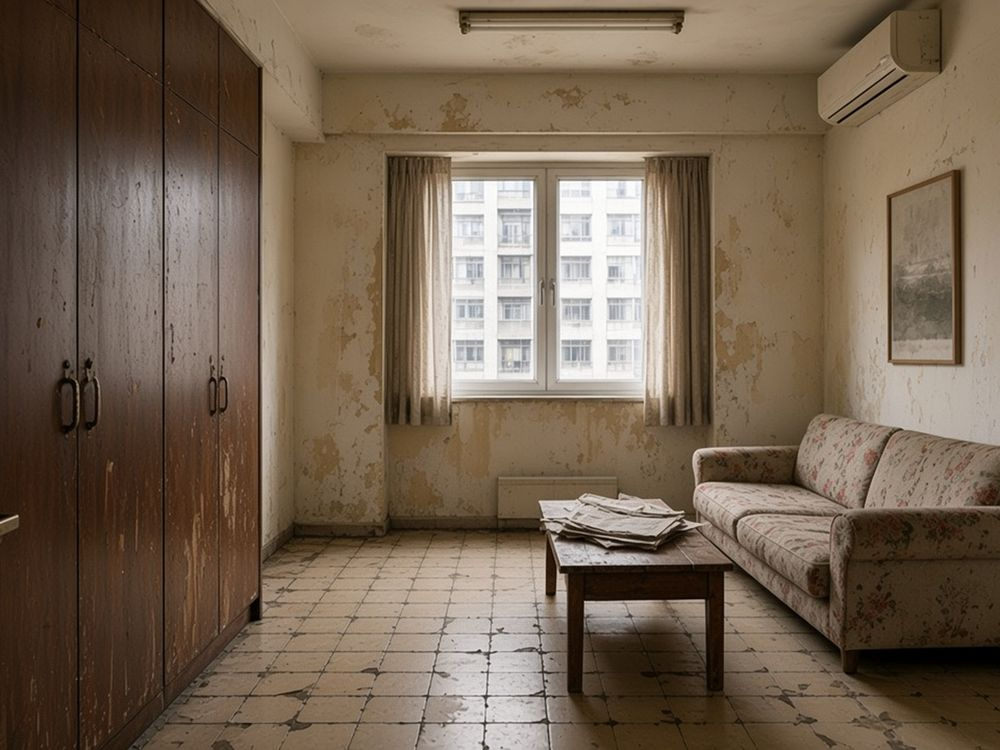
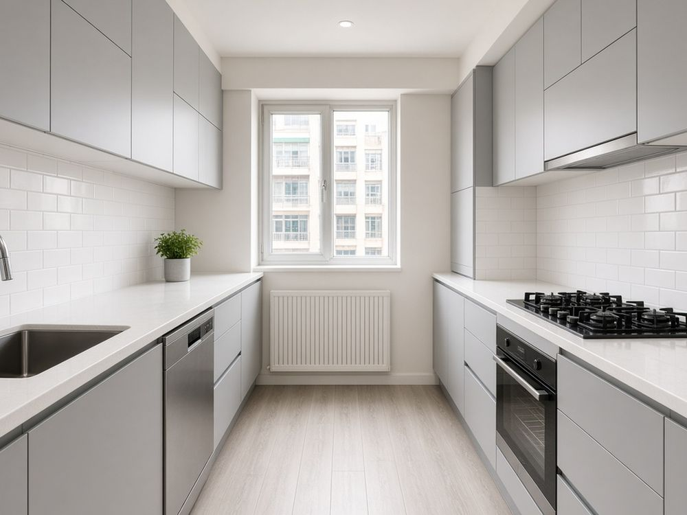
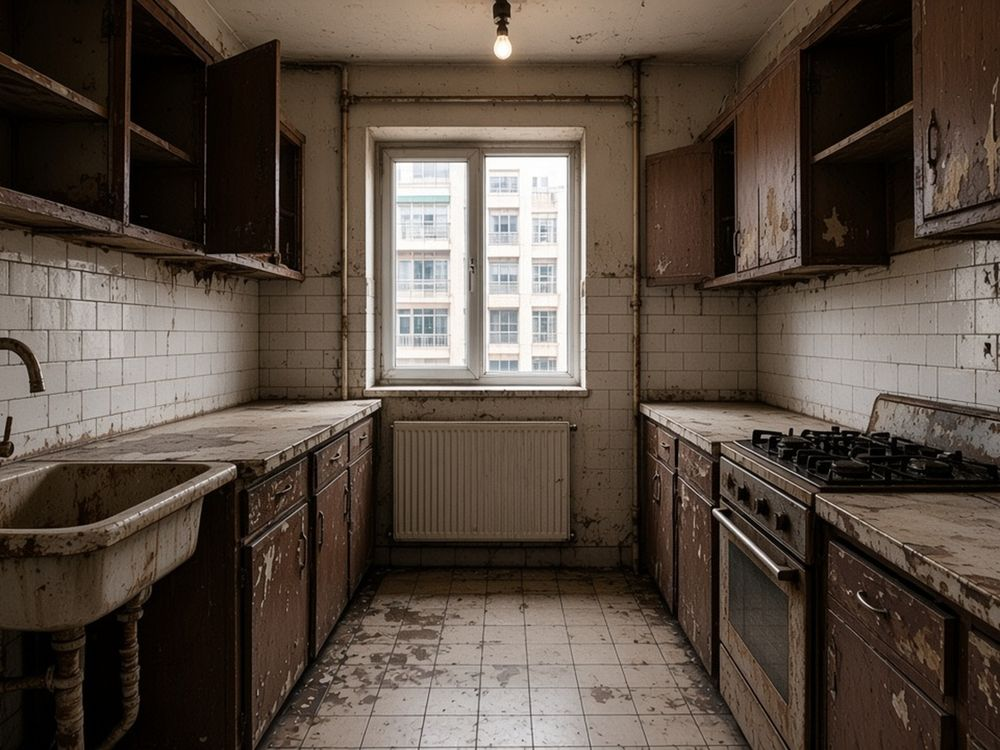
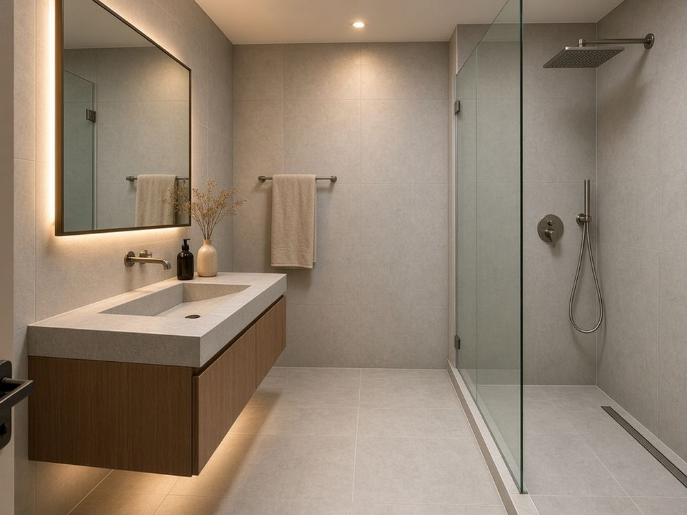
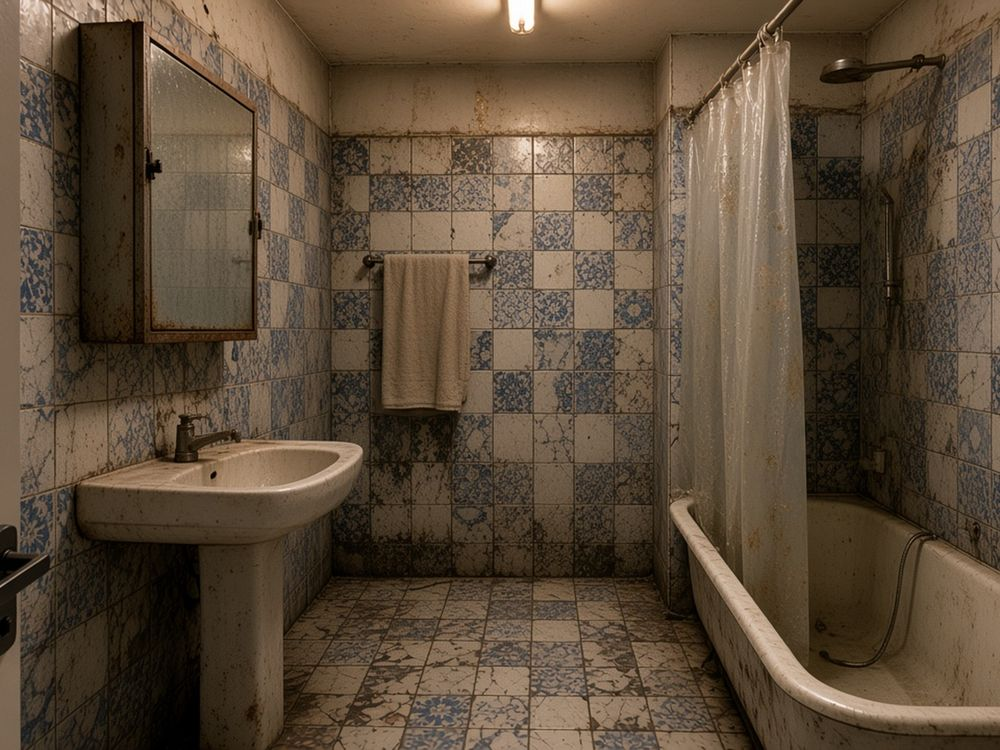
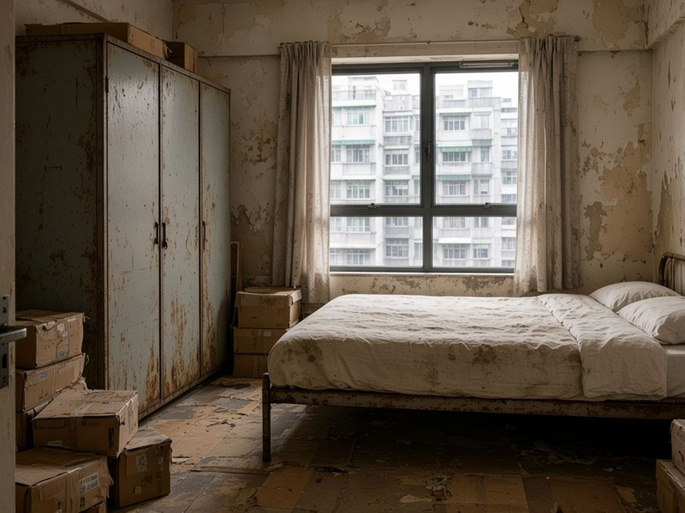
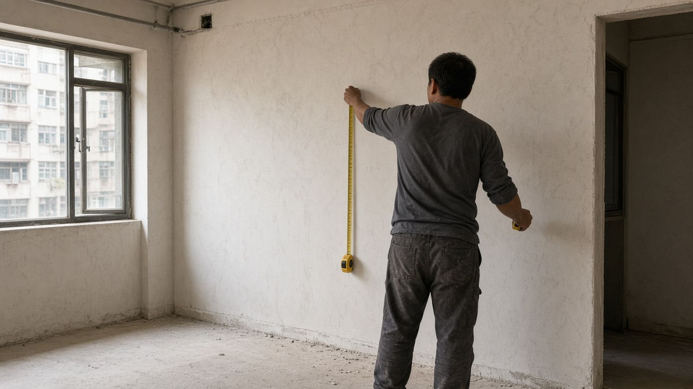

全屋翻新・觀塘・420 呎・示範

SERVICES
大工程小執修都做，做法用料寫入報價。
清拆到收口一條龍。
重鋪磚、換廚櫃、重做防水。
換線換喉、加插座（註冊電業工程人員，示範）。
批灰、防霉油漆、補裂紋。
衣櫃、地台、度身訂造。
滲水檢查、閉水測試。
BEFORE / AFTER
拖動分隔線睇變化。

全屋翻新・觀塘・420 呎・示範


廚房翻新・沙田・居屋・示範


浴室及防水・北角・唐樓・示範


木工油漆・屯門・100 呎・示範
※ AI 生成示意圖，並非真實工程，僅作示範。
WHY US
每項都寫入合約（示範）。
「報價逐項列晒，冇中途加錢。」
陳太・將軍澳 虛構示範評價
PROCESS
五步，每步確認先繼續。
講清楚單位、預算同入伙時間。
檢查水電、滲水同間隔。
約 3–5 個工作天出報價（示範）。
定期傳進度相，後加工程先書面確認。
逐項驗收，再進入保養期（示範）。

FAQ
答案為示範，以合約為準。
度尺同初步報價不收費（示範）。
清拆及泥頭會逐項列明；管理處按金由業主交。
400 呎約 6–10 星期（示範）。
按工程進度分期（示範，以合約為準）。
須由合資格人士評估，按屋宇署要求辦理。
港九新界都去，離島或另收運輸費（示範）。
SERVICE AREAS
港九新界都可以上門度尺。